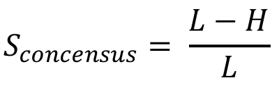
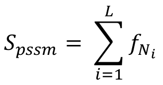
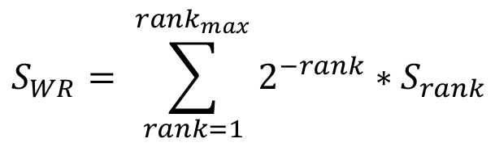

|
RBPmap Overview
RBPmap is a computational tool that enables accurate prediction and mapping of RNA binding proteins (RBPs) binding sites
on any RNA sequence or list of sequences of interest, provided by the users (as either sequences or genomic coordinates).
RBPmap has been developed specifically for mapping RBPs in human, mouse and drosophila melanogaster genomes,
though it supports mapping RBP binding sites in other organisms too.
RBPmap enables the users to select motifs from a database of 223 human/mouse and 51 drosophila melanogaster experimentally defined motifs,
extracted from the literature as a Position Specific Scoring Matrix (PSSM).
View RBPmap motifs list.
In addition, the user can provide any motif of interest given as either a consensus (over IUPAC symbols) or a PSSM in MEME format.
The algorithm for mapping the motifs on the RNA sequences is based on the Weighted-Rank (WR) approach,
previously exploited in the SFmap web-server for mapping splicing factor binding sites (http://sfmap.technion.ac.il).
The mapping algorithm considers the clustering propensity of the motif and the overall tendency of regulatory region to be conserved
(Akerman et al., Genome Biology 2009).
A detailed description of RBPmap algorithm:
Processing the query sequence (for human, mouse and Drosophila genomes)
The mandatory input parameters for RBPmap are a query sequence and at least one motif of interest to be mapped to the sequence. The query sequence can be provided as a sequence in FASTA format or as genomic coordinates. In case the query sequence is provided in FASTA format, RBPmap uses the BLAT utility to map the sequence to the chosen genome and retrieve the genomic coordinates. The sequence is then expanded by 25nts upstream and downstream to include the sequence environment in the WR calculation (see below). Further, the sequence is mapped to the genome and categorized to one of five different genomic regions: intronic regions flanking the splice sites (80nts long), internal exons, exons in 5’ and 3’ UTR regions, non-coding RNA and mid-intron/intergenic regions. The category of the sequence is further used to choose the region-specific background model (see below).
Calculating a match score for the motif
Given a query sequence and a motif (defined as either a consensus sequence or a PSSM, selected from RBPmap database or provided by the user), a match score for the motif is calculated for each k-mer of the motif size in the query sequence, in overlapping windows. The match score Sconsensus, for motif provided as a consensus sequence, is defined as following:  Where L is the motif length and H is the Hamming distance between each k-mer and the motif. The match score Spssm, for a PSSM (Position Specific Scoring Matrix), is defined as following:  Where L is the motif length, Ni is the specific nucleotide in position i and f(Ni) is the frequency of the nucleotide as defined in the PSSM. The values of both match scores range between 0 and 1, increasing as the distance between the motif and the k-mer decreases.
Comparing the match scores to a background model
For defining a significant match, the match scores of all the sites in the query sequence are compared to the mean match score for the motif calculated for a background of randomly chosen regulatory regions (composed of exonic and intronic regions around splice-sites and exons in UTR regions). Z-scores are calculated and coupled to a P-value, which represents the probability of obtaining a specific Z-score considering a normal one-tailed distribution. The sites are filtered according to two thresholds (set by the user as the stringency level parameter): significant threshold (default P-value<0.01) and suboptimal threshold (default P-value<0.02). The significant threshold is used to define the putative binding site and the suboptimal threshold, which is less stringent, filters the sites that are clustered around the putative binding site and will be considered in the Weighted Rank (WR) score (see below).
Calculating a Weighted Rank (WR) score for windows around each putative binding site
In order to calculate a multiplicity score, which reflects the propensity of suboptimal motifs to cluster around the significant motif, a Weighted Rank (WR) function is employed. The WR score is calculated for each candidate significant site, by summing up all suboptimal match scores within a window of 50nts around the site (25nts of each side), weighted by their match to the motif of interest (the significant site is ranked first). The WR score SWR is defined as following:  Where rankmax is the number of suboptimal sites within the 50nts window and Srank is the match score of each ranked suboptimal site.
Comparing the WR scores to a region-specific background model
In order to reduce the false positive predictions, the final WR scores are compared to a background model, which is calculated independently for 5 different genomic regions (see above). The WR score of each putative binding site is compared to the mean WR score of its pre-defined genomic region. Z-scores are calculated and coupled to a P-value, which represents the probability of obtaining a specific Z-score considering a normal one-tailed distribution. The sites are reported as predicted binding sites if their P-value<0.05. The Z-score and P-value of the predicted binding sites are reported in the output of RBPmap.
Conservation-based filtering
The conservation-based filtering is optional and can be applied only to binding sites that are mapped to intronic/intergenic regions. It is based on the tendency of regulatory regions to be evolutionary conserved. These sites are removed from the final results if the mean conservation score calculated for their window is lower than the mean conservation score calculated for intronic regulatory regions. For sequences from human and mouse, the conservation information is retrieved from the UCSC phyloP conservation table (Siepel et al., Genome Res. 2005), based on the conservation of all placental mammals. For Drosophila sequences we use the phastCons insect conservation table (Siepel et al., Genome Res. 2005). Conservation filtering can be applied only for input sequences from human mouse or Drosophila. |
|